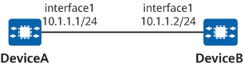

Example for Configuring Basic HDLC Functions
This section provides an example for configuring basic HDLC functions to implement device interworking in typical networking.
Networking Requirements
On the network, DeviceA and DeviceB are connected over POS interfaces. Configure HDLC on this network.

In this example, interface1 represents POS0/1/0.

Configuration Roadmap
The configuration roadmap is as follows:
Configure HDLC as the link layer encapsulation protocol for each device.
Assign an IP address to each interface.
Data Preparation
To complete the configuration, you need the following data:
IP address of the interface on DeviceA
IP address of the interface on DeviceB
The interface IP addresses of DeviceA and DeviceB must be on the same network segment; otherwise, the link layer protocol cannot go up.
Procedure
- Configure DeviceA.
<HUAWEI> system-view[~HUAWEI] sysname DeviceA
[~DeviceA] interface pos 0/1/0
[~DeviceA-Pos0/1/0] link-protocol hdlc
[~DeviceA-Pos0/1/0] ip address 10.1.1.1 24
[~DeviceA-Pos0/1/0] undo shutdown
[~DeviceA-Pos0/1/0] quit
- Configure DeviceB.
<HUAWEI> system-view[~HUAWEI] sysname DeviceB
[~DeviceB] interface pos 0/1/0
[~DeviceB-Pos0/1/0] link-protocol hdlc
[~DeviceB-Pos0/1/0] ip address 10.1.1.2 24
[~DeviceB-Pos0/1/0] undo shutdown
[~DeviceB-Pos0/1/0] quit
- Verify the configuration.
After the configuration is complete, check whether DeviceA and DeviceB can ping each other.
The following example uses the command output on DeviceA.
[~DeviceA] ping 10.1.1.2
PING 10.1.1.2: 56 data bytes, press CTRL_C to break
Reply from 10.1.1.2: bytes=56 Sequence=1 ttl=255 time=31 ms
Reply from 10.1.1.2: bytes=56 Sequence=2 ttl=255 time=31 ms
Reply from 10.1.1.2: bytes=56 Sequence=3 ttl=255 time=31 ms
Reply from 10.1.1.2: bytes=56 Sequence=4 ttl=255 time=31 ms
Reply from 10.1.1.2: bytes=56 Sequence=5 ttl=255 time=31 ms
--- 10.1.1.2 ping statistics ---
5 packet(s) transmitted
5 packet(s) received
0.00% packet loss
round-trip min/avg/max = 31/31/31 ms
Run the display ip routing-table command to check whether the routing information is correct.
[~DeviceA] display ip routing-table
Route Flags: R - relay, D - download to fib, T - to vpn-instance, B - black hole route------------------------------------------------------------------------------
Routing Tables: Public
Destinations : 2 Routes : 2
Destination/Mask Proto Pre Cost Flags NextHop Interface
10.1.1.0/24 Direct 0 0 D 10.1.1.1 Pos0/1/010.1.1.1/32 Direct 0 0 D 127.0.0.1 Pos0/1/0